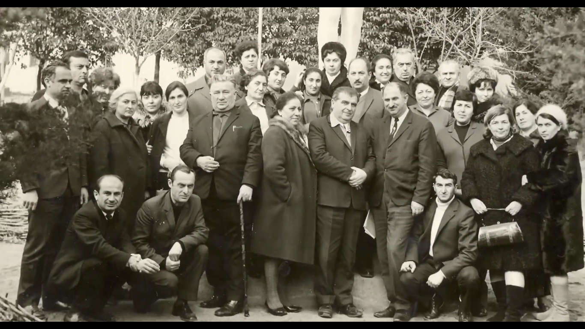

კომაროვის სკოლა 50 წელზე მეტია, რაც ემსახურება საქართველოს წარმატებული თაობების აღზრდით. დაარსდა რა 1964-65 წლებში, თბილისის N199 საჯარო სკოლამ მაშინვე გაითქვა სახელი მთელ საქართველოში. "კომაროვის სკოლაში მოხვედრა უფრო რთული იყო, ვიდრე თბილისის უნივერსიტეტში", - ჰამლეტ მელაძე.
ახლად გახსნილ სკოლას სათავეში ვარლამ მელაძე, პირველი დირექტორი, ჩაუდგა. არსებობდა მზრუნველთა საბჭო, აკადემიკოს ნიკო მუსხელიშვილის თავმჯდომარეობით. საბჭოს წევრები იყვნენ გამოჩენილი ქართველი მათემატიკოსები და ფიზიკოსები: ილია ვეკუა, ვიქტორ კუპრაძე და ა.შ. საბჭო თვეში 2-ჯერ იკრიბებოდა და განიხილავდა სკოლაში არსებულ პრობლემებს, მათი გადაჭრის გზებს და განვითარების პერსპექტივებს.
საინტერესოა, რომ თავდაპირველად კომაროვის სკოლა ინტერნატს წარმოადგენდა, რომელშიც რეგიონებში მცხოვრები ნიჭიერი ახალგაზრდები მიდიოდნენ სასწავლებლად. სიტყვის გასავრცელებლად კი ტარდებოდა გაცნობითი პროგრამები სხვადასხვა რეგიონებში. ხოლო თბილისის გამორჩეული ბავშვებისთვის პარალელურად არსებული N42 სკოლა იყო განკუთვნილი, თუმცა ასეთი სტრუქტურა მხოლოდ საწყის პერიოდში გვხვდებოდა. შემდგომ ის შეიცვალა და მიიღო დღევანდელი სახე. ინტერნატში(ამჟამად პანსიონში) ცხოვრება სრულიად უფასო იყო. დღეისათვის კომაროვის სკოლის-პანსიონში საქართველოს რეგიონებში მცხოვრები მე-7-12 კლასების 100-მდე მოსწავლე ცხოვრობს.
დაარსებიდან, პირველივე წლიდან, სკოლაში მოსახვედრად აუცილებელი იყო მისაღები გამოცდის ჩაბარება. სკოლა პრესტიჟული იყო, თუმცა მკაცრი წესებით.
კომაროვში ასევე ფუნქციონირებს შაბათისა და საღამოს სკოლები. შაბათის სკოლა უკვე 14 წელია რაც არსებობს. ის განკუთნილია, სხვა სკოლის მოსწავლეებისთვის, რომლებსაც მათემატიკის გაღრმავებულად შესწავლა სურთ. აქ სწავლა მეხუთე-მეექვსე კლასის მოსწავლეებს შეუძლიათ.
რაც შეეხება საღამოს სკოლას, ის 7 წელია ფუნციონირებს და განკუთვნილია, მე-7, მე-8 და მე-9 კლასის იმ მოსწავლეებისათვის, რომლებიც არ სწავლობენ კომაროვის სკოლაში და დაინტერესებულნი არიან, რომ მათემატიკა და ფიზიკა კომაროვის სკოლის პროგრამით ისწავლონ.
"ხუმრობით ჩვენი არაკომაროველი მეგობრები სექტასაც გვეძახიან" - ამბობს ამჟამინდელი დირექტორი, ივანე კვიტაშვილი. ამ სექტამ შეძლო, უამრავი წარმატება მოეპოვებინა. კომაროვის მოსწავლეები მუდმივად იღებენ მონაწილეობას როგორც ეროვნულ, ისე საერთაშორისო ოლიმპიადებში და საოცარ შედეგებს აღწევენ. პირველი მედალი, კერძოდ, ბრინჯაო, 1986 წელს ჩამოიტანა ლონდონიდან გიორგი ნიკოლაიშვილმა. ჯამში, საერთაშორისო ოლიმპიადებსა და კონფერენციებზე მიღწეული წარმატებები 50-მდე აღწევს.
ივანე კვიტაშვილმა, დღევანდელმა დირექტორმა კომაროვისა, სწორედ ეს სკოლა დაამთავრა 1990 წელს, 1998-ში პედაგოგად მოვიდა, 2010 წლიდან კი მისი დირექტორია.
გთავაზობთ სკოლის დირექტორთა სიას:
1. ვარლამ მელაძე 1965-1976
2. აკაკი ცხადაია 1976-1989
3. ჯემალ ვეკუა 1989 - 2003
4. ნათელა კოღონია 2003-2004
5. გელა მანელიძე 2004-2010
6. ივანე კვიტაშვილი 2010-დღემდე
თებერვალი, 2019
გამოცემა N2
სტატიის ავტორი: ნიკა ჩხეიძე